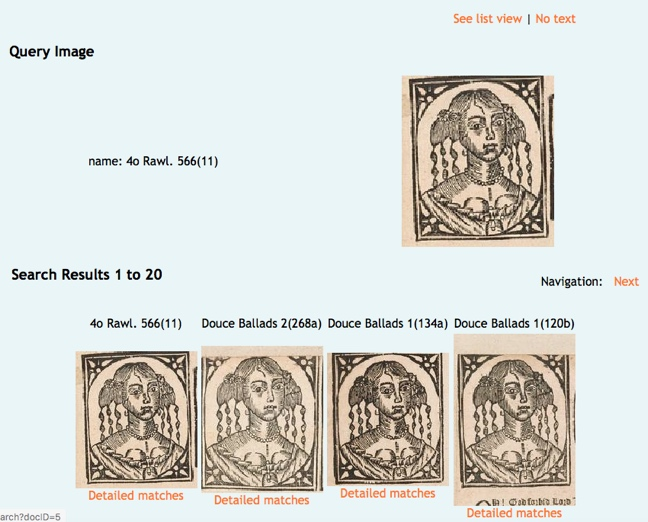
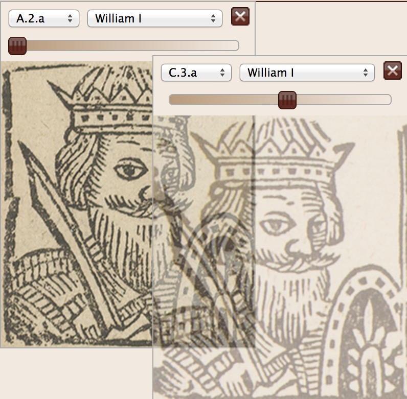
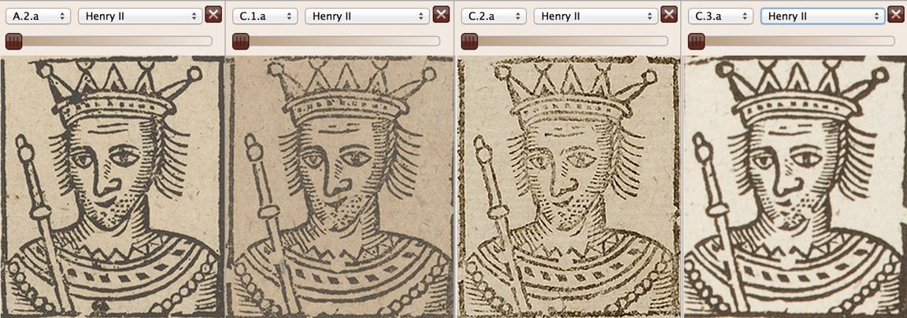
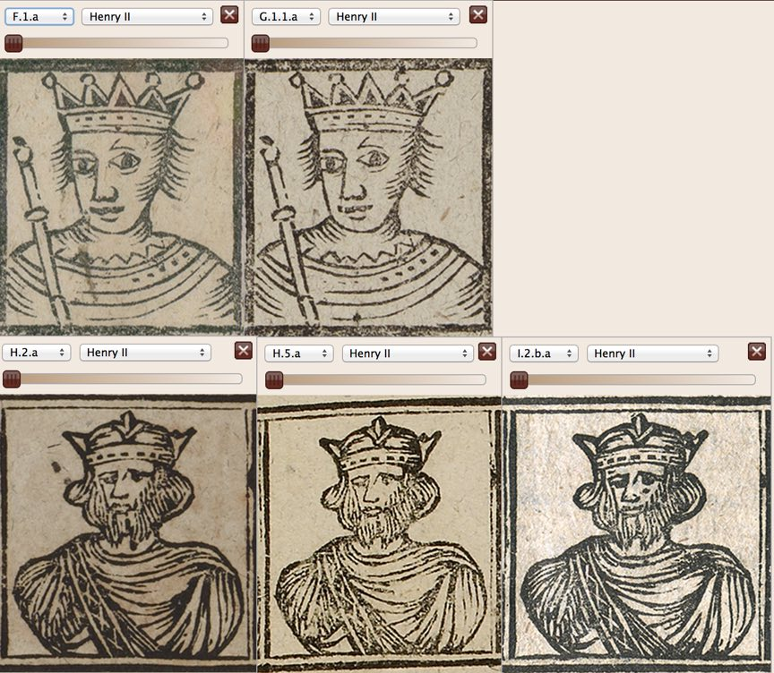
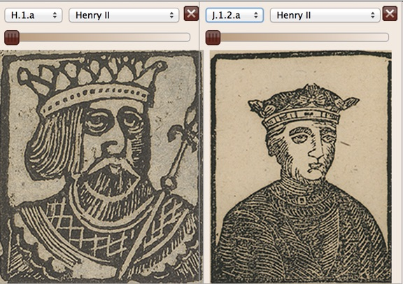

The Wandering Jew's Chronicle
5. The ballad's illustrations
Most editions of the Chronicle include woodcut illustrations portraying the monarchs and occasionally their consorts.[1] For A.2, the sequence of illustrations corresponds with the narrative of the text: it begins with a portrait of William I and concludes with Charles I and Henrietta Maria, daughter of Henry IV of France, printed in two woodblock rows. While as has been seen the C editions update their text to the present, the existing blocks are recycled without the addition of an illustration of the current monarch, Charles II. Whether from economy or piety towards the living king's countenance, the omission of the reigning monarch was to become an occasional tradition within the Chronicle's publishing history.[2]
The recycling of blocks can be useful to the historian of the Chronicle and other printed texts. Tracking the recurrence of woodblocks (or other printing materials such as ornaments, rules or pieces of type) can reveal printers, uncover forgeries and help date editions.[3] Bibliographers have long employed similar technical aids to identify common blocks, using strobes, stereoscopic arrangements of mirrors, or the overlaying of transparencies on film or on screen.[4] Recently, systems employing digital image-recognition have been developed: these include the University of Oxford's ImageMatch tool, commissioned to assist in the study of the woodcuts of The Wandering Jew's Chronicle and other ballads.[5]

Fig.10. Content-based image-recognition of ballad woodcuts: the Bodleian Library's ImageMatch tool.
The Illustrations tab of the edition that this paper accompanies has a feature for comparing woodcuts: by layering and adjusting the transparency, users can readily see if the same block or a copy was used.

Fig. 11. The Illustrations section's variable opacity feature shown with images of two printings from the same block overlaid.
All of these technical aids are necessarily used in combination with a knowledge of printing. There are many circumstances that can influence how a block is printed, such as condition of the impression and the condition of the block, which may also be copied more closely than either human or computer vision can readily distinguish. Deterioration or other distinctive features of the block can help: cracks and chips to blocks, and the appearance of wormholes made by burrowing insects which show up as white circles within the impressions, are particularly useful in identifying a reused block, as is shown by their appearance in the second of these two Chronicle woodcuts, and their recurrence in the latter two.[6]

Fig. 12. four images of Henry II from successive editions of the ballad, each printed from the same woodblock.
Ballad woodblocks of the period were used to destruction, often appearing on multiple ballads, but the Chronicle blocks seem to have been reserved almost exclusively as accompaniments to this particular ballad, perhaps due to their size or their close association with the text. The one exception I am aware of is a ballad dated 1650, A Watch for a Wise-mans observation, on which the bottom row of the A-C edition blocks is awkwardly placed: evidently in better condition here than it was when used on Francis Grove's A.2 edition, it indicates a publication date for A.2 around the registration date of 1656.[7]
While all the C-editions employ these same blocks (absenting the image of Henry V, which seems to have broken off the end of its block before C.1 was printed)[8] subsequent editions adopt either copies or new versions.

Fig. 13. Five views of Henry II from various later editions of the ballad.

Fig. 14. Two late views of Henry II.
One edition (H.3) lacks any illustrations, while two editions (H.4 and I.1) are illustrated with single woodcuts of monarchs.[9] A distinctive visual genealogy, made up of the descent of the ballad's bibliographical elements (the blocks, which confirm the order of publishing indicated by the imprints) and iconographic elements (the subject of those blocks) can therefore be added to the publication timeline.
[1] See Franklin, 'Art of illustration'; Bamber Gascoigne, How to identify prints, (Thames and Hudson, 1995)
[2] Of the editions illustrated with the heads of all the monarchs, C.1, C.2, C.3, F.1, G.1 and I.2 lack an illustration for the monarch with which the text concludes, whereas the illustrations on H.1, H.2, H.5 and J.1 are up to date with the texts. The depiction of the royal consorts is yet more uneven: whereas A.2, H.2 and J.1 provide illustrations of the consorts of the kings with which the text concludes, C.1, C.2, C.3, H.5 and I.1. retain the consorts of either, in the case of the C editions and I.1 the deceased monarch or, in the case of H.5, the deceased consort of the reigning monarch.
[3] Charlton Hinman, The printing and proof-reading of the First Folio, (Clarendon Press, 1963); Adrian Weiss, 'Bibliographical methods for identifying unknown printers in Elizabethan/Jacobean Books', Studies in Bibliography, 44 (1991), 183-228.
[4] Stephen Escar Smith, '"The eternal verities verified": Charlton Hinman and The roots of mechanical collation', Studies in Bibliography, 53, (2000), 129-61; Alexandra Franklin, 'Library machines: The Mcleod collator', http://blogs.bodleian.ox.ac.uk/theconveyor/2010/09/03/library-machines-the-mcleod-collator ; (see also http://blogs.bodleian.ox.ac.uk/theconveyor/files/2010/09/mcleod_collator_guide.pdf [both accessed 15/12/13]).
[5] Giles Bergel, 'Bodleian Ballads ImageMatch demonstrator now online', http://balladsblog.bodleian.ox.ac.uk/blog/570[accessed 15/12/13] and Giles Bergel, Alexandra Franklin, Michael Heaney, Relja Arandjelovic, Andrew Zisserman and Donata Funke, 'Content-based image recognition on printed broadside ballads: The Bodleian Libraries' ImageMatch Tool', Proceedings of the IFLA World Library and Information Congress, 2013, http://library.ifla.org/id/eprint/209, [accessed 15/12/13].
[6] Giles Bergel, 'Of ballads and worms', http://balladsblog.bodleian.ox.ac.uk/blog/584 [accessed 15/12/13]; Barry McKay, 'Cumbrian chapbook cuts: some sources and other versions', in The reach of print: making, selling and using books, (St. Paul's Bibliographies, 1998), 65-83.
[7] A Watch for a Wise-mans observation (ESTC R171940), see http://ebba.english.ucsb.edu/ballad/34570/image (accessed 8/11/2016), brought to my attention by Joyce King.
[8] A number of woodblocks inherited by the Newcastle printer John White from his father were employed by him and his successors for over a century: see Charles Heppner, 'A collection of woodblocks and related material at McGill University', The Book Collector, 35, (1986), 53-66.
[9] The woodcut on I.1 is an adaptation of the illustration on The life and death of the great Duke of Buckingham, printed in Northampton by William Dicey (ESTC N4235), a copy of which may be seen at http://ballads.bodleian.ox.ac.uk/view/edition/18635 [accessed 15/12/13].